Empezamos el análisis con un escaneo de puertos simple:
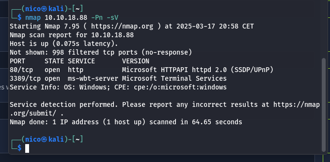Vemos un servicio web en el puerto 80, y un escritorio remoto en el 3389.
Si entramos en el servicio web, apreciamos una especie de blog personal:
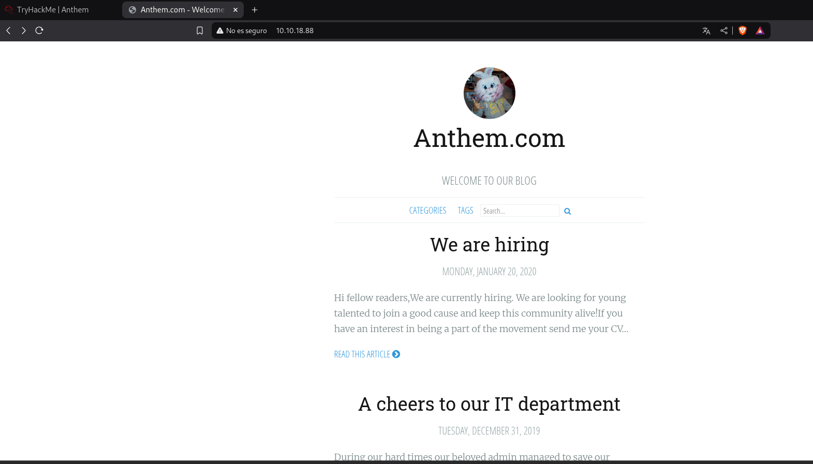Metiéndome en enlaces del propio blog, he sacado esta flag:
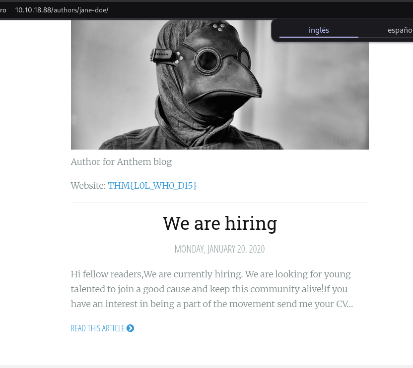 THM{L0L_WH0_D15} 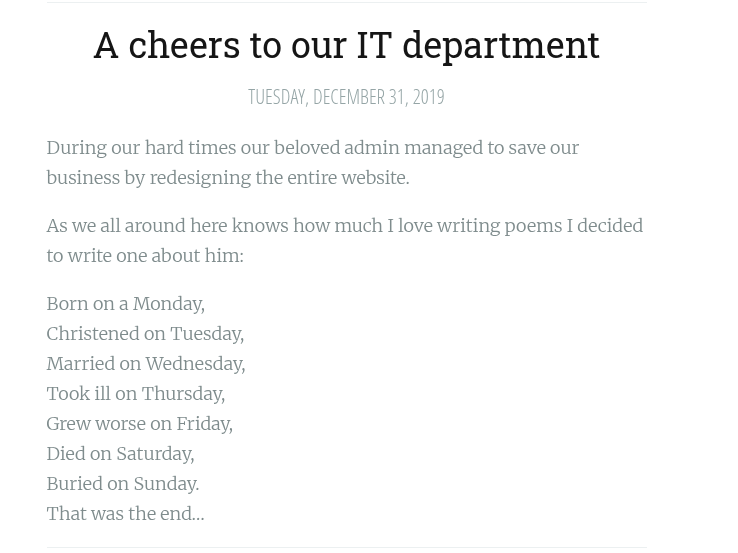Un poema(?)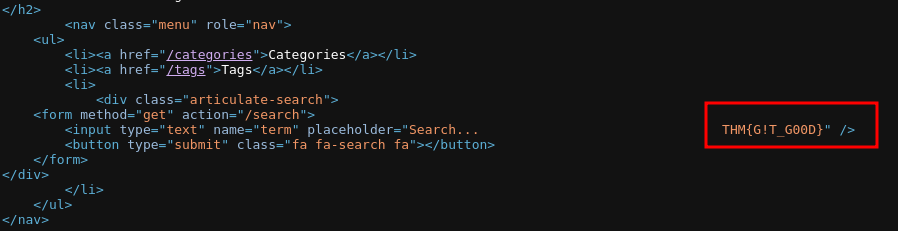 THM{G!T_G00D}
Parece que es muy conocido en CTFs
Y poco más, voy a hacer un fuzzeo a ver qué sale:
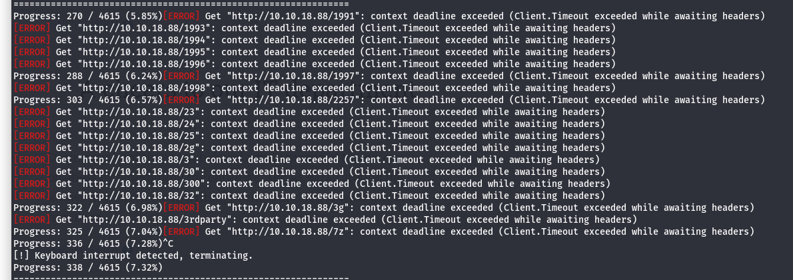Me he cargado gobuster(?)
Mis herramientas de fuzzeo parece que no funcionan, pruebo con los directorios típicos y sale esto:
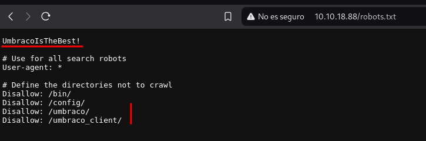Lo que parece una contraseña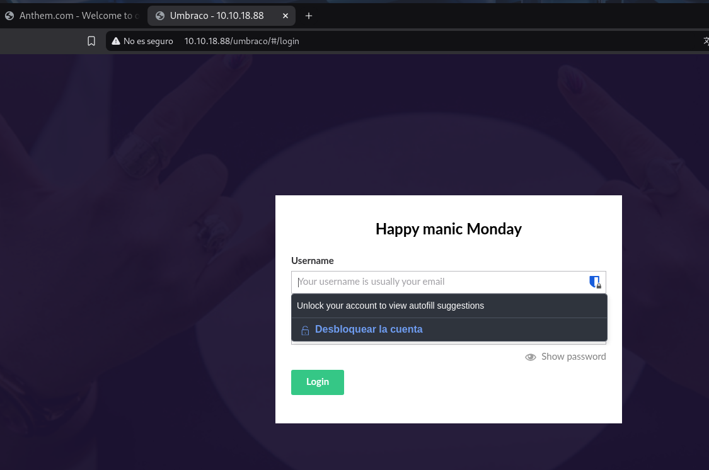
El CMS umbraco
Esto nos redirige a un login, tenemos la contraseña, falta el usuario:
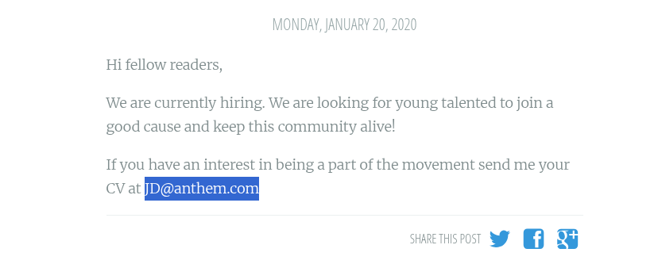No es ni este, ni otro que he deducido usando la misma lógica: jh@anthem.com
La única pista que tengo es el poema de antes, chatGPT dice que se trata de un poema de Solomon Grundy (sg@anthem.com)(?)
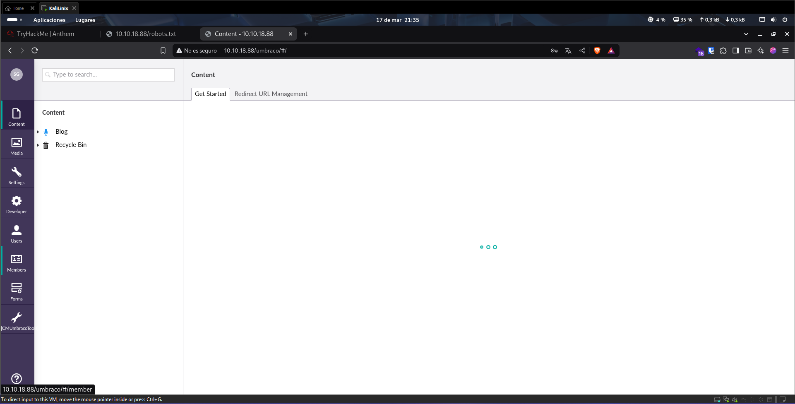Un poco rebuscado la verdad...
Ya encontré 2 antes, las pongo aquí:
flag 3: THM{L0L_WH0_D15} flag 2: THM{G!T_G00D}Para el resto, parece que vamos a tener que seguir buscando.
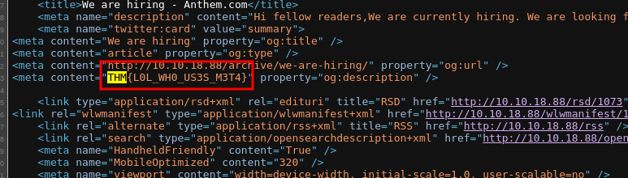 flag 1: THM{L0L_WH0_US3S_M3T4}Literalmente, todas las flags se pueden encontrar desde un principio, solo hay que inspeccionar el código fuente de la página.
En el análisis de puertos, vimos que el servidor tiene un escritorio remoto, vamos a intentar iniciar sesión con las credenciales que tenemos:
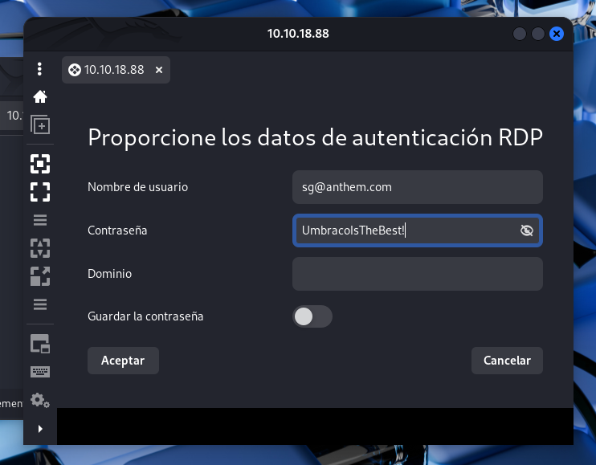Claro, así da error, un usuario de windows no puede tener un dominio de correos, poner solo sg en el campo usuario.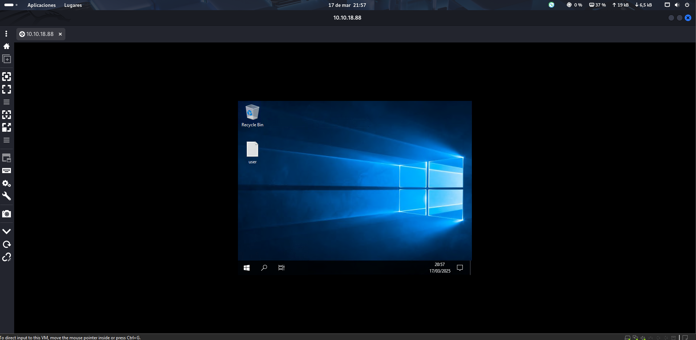
Ya hemos iniciado sesión con un usuario normal en la máquina, y en el escritorio tenemos la primera flag:
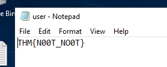THM nos da una pista para encontrar la contraseña del administrador: It is hidden, pruebo a mostrar los archivos ocultos desde el explorador:
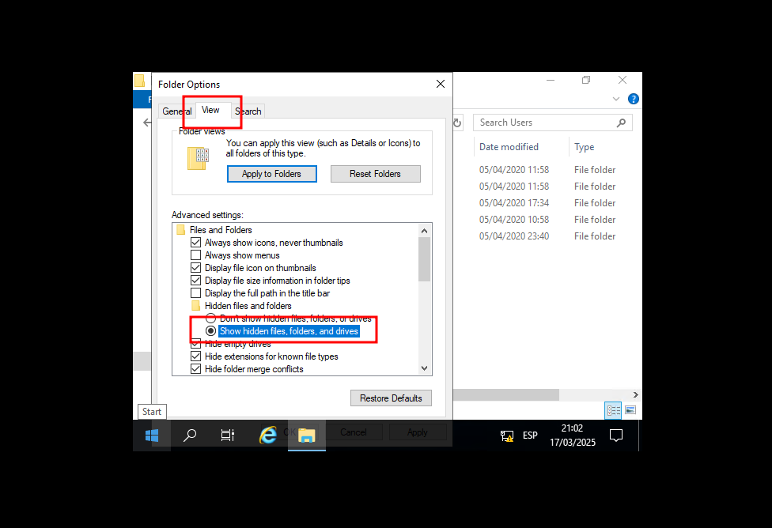 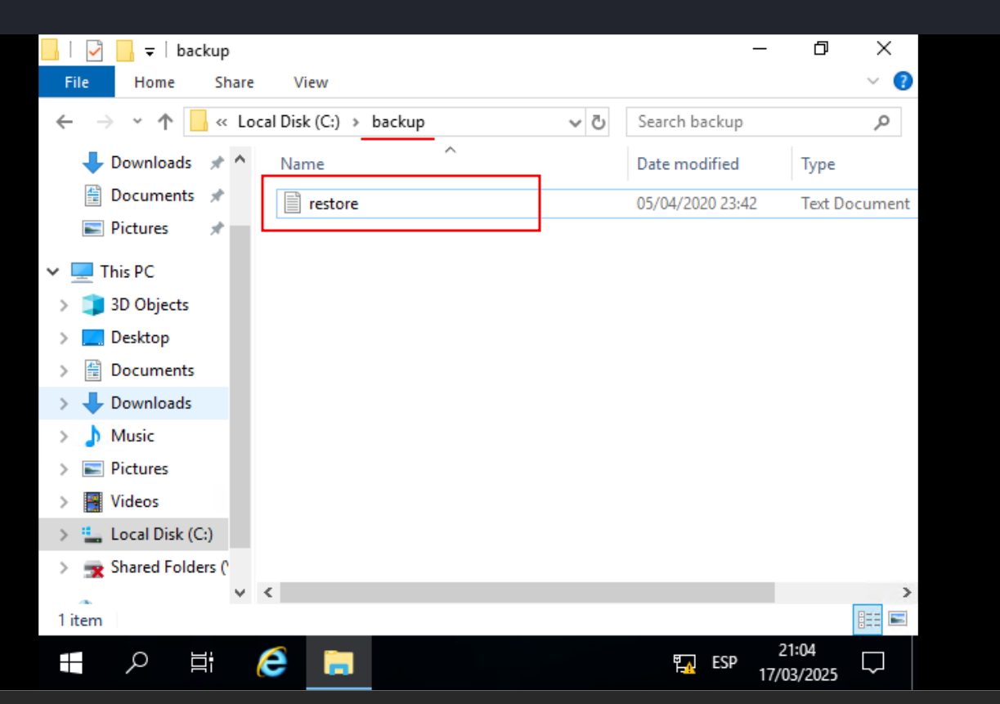Encontramos un archivo en una carpeta oculta, pero no podemos abrirlo por temas de permisos.
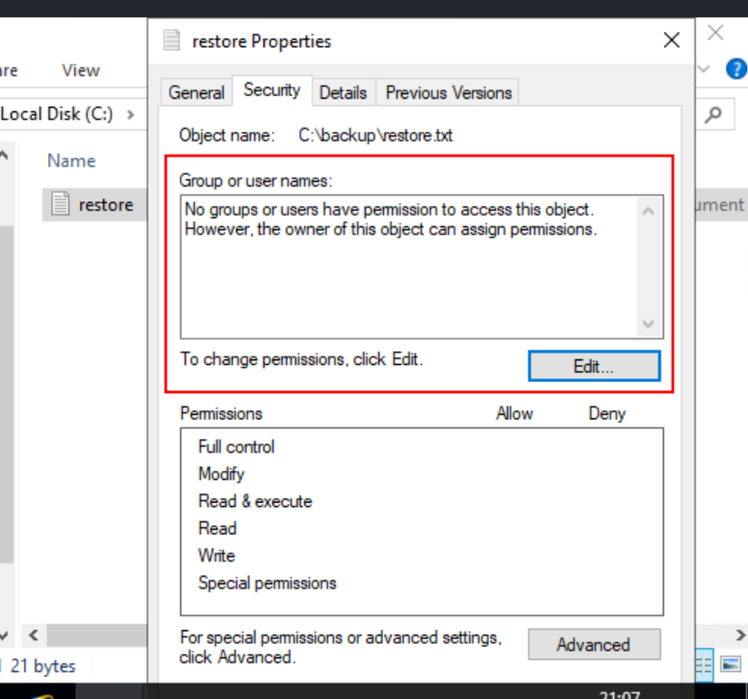Nadie tiene permisos para ver/editar el archivo(OK), lo editamos y añadimos a SG: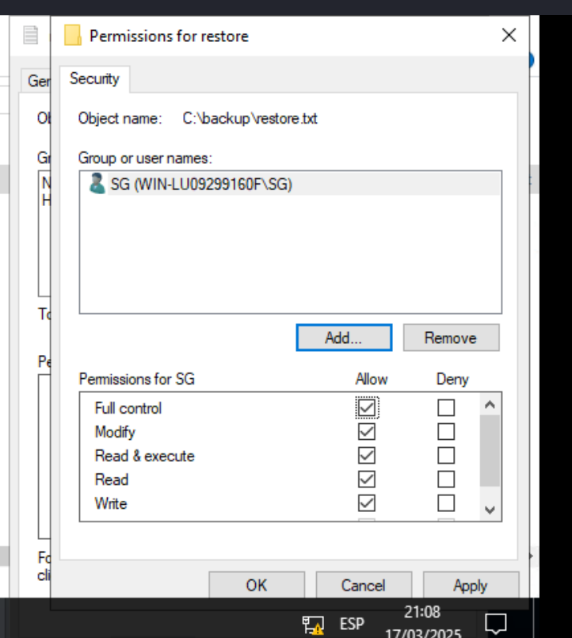 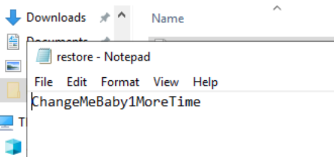 Contraseña del root: ChangeMeBaby1MoreTime
Ahora podríamos cerrar sesión SG e iniciar con Administrator:
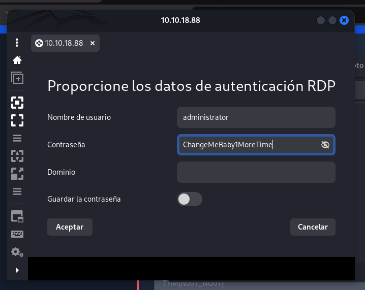 ChangeMeBaby1MoreTimeY ya estaría, una forma extraña de escalar privilegios.